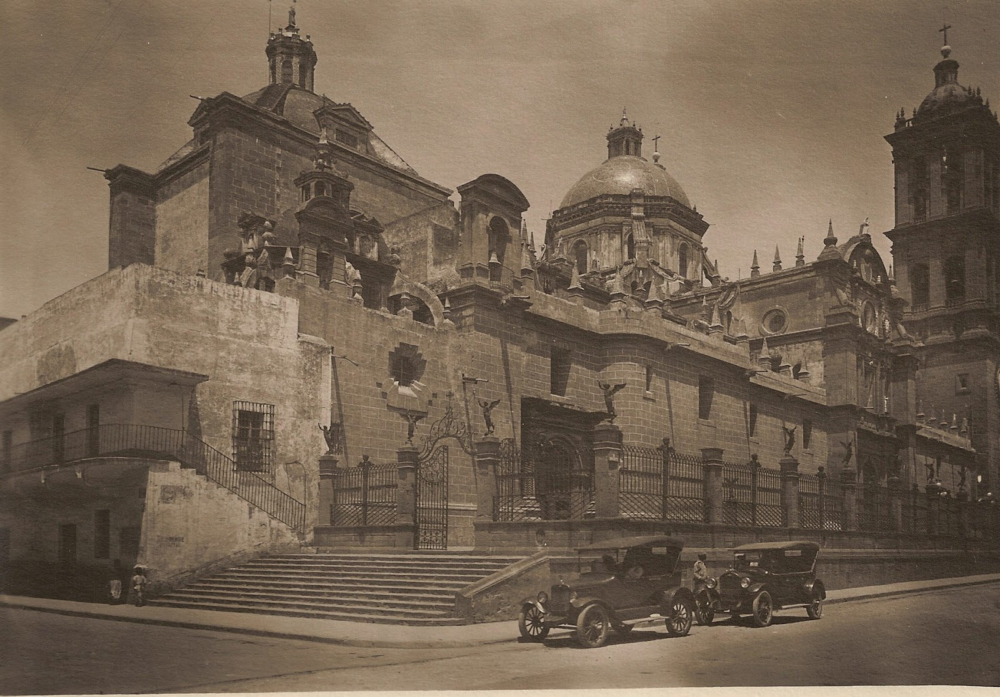

Consumada la conquista Española en el primer tercio del siglo XVI, se funda la Ciudad de Puebla de los Ángeles, en un valle denominado Cuetlaxcoapan, el cual se ubica a 120 Km. al sureste de la Ciudad de México, rodeado de los volcanes Popocatépetl, Ixtaccihuatl, Pico de Orizaba y la montaña “La Malinche”. La fecha de fundación fue el 16 de abril de 1531, el trabajo para delinear y formar las calles fue dirigido por el fraile franciscano Toribio de Benavente. La ciudad fue fundada con la intención de conformarla en un espacio para inmigrantes españoles, la que se convierte en la segunda ciudad en importancia de la Nueva España, gracias a que se constituye en un gran espacio productivo.
